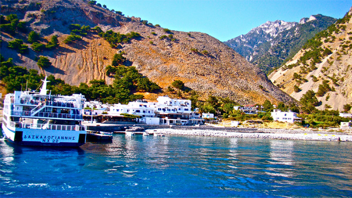
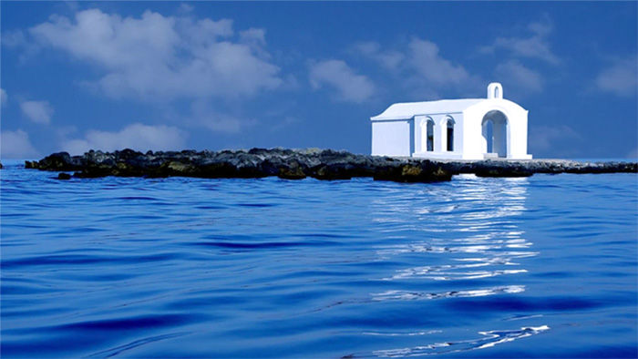

Георгиуполь
Поселок Георгиуполь это известное туристическое место, он находится в 10 мин. ходбы, там есть вся инфрасруктура, роскошные протяженные песчанные пляжи, удивительная природа, несколько речек, впадающих в море, где водятся черепахи. В поселке есть большой бесплатный бассейн у моря с кафе. Вокруг есть специальные велосипедные дороги, местность плоская, можно ехать на велосипеде вдоль пляжа.
В георгиуполе недавно построили набережную, которая вечером очень романтично подсвечивается. В целом в этом поселке будут прекрасно отдыхать туристы всех возрастов и различных вкусов. В нескольких километрах от Георгиуполя -известная достопримечательность, очень красивое озеро Курна, окруженное горами, где есть несколько тавер с изумительным видом на озеро а так же поселок Аргируполе, где в тавернах с водопадами прохладно даже в самую жару. Такого второго идеального места нет на всем Крите. В альбоме можно увидеть фото окрестностей.
С наступлением темноты в многочисленных национальных тавернах на берегу моря предлагают «простой ужин критского крестьянина» из двенадцати блюд, до самого утра звучит живая музыка, а танец «сиртаки» постепенно втягивает в свой круг всех гостей. Веселье периодически оживляется традиционным битьём недорогих тарелок под ноги танцующим. Археологический музей, остров Спиналонга, долина Лассити (с дегустацией вин, знакомством с процессом производства оливкового масла, посещением керамической мастерской и горного монастыря 14 века), круиз на острова Диа или Санторини, экскурсия в ущелье Самарья.
Греческие острова – сосредоточие природных и исторических достопримечательностей. Среди уютных бухт изрезанной береговой линии таятся живописные рыбацкие деревушки, вековые оливковые рощи скрывают руины древних цивилизаций, сияют в солнечных лучах белоснежные стены домов, а черепичные крыши окрашиваются по вечерам в ярко-багряные оттенки. А ещё с Греческих островов можно легко добраться до материка – например, чтобы воочию увидеть величие Афин, Спарты или Метеор.